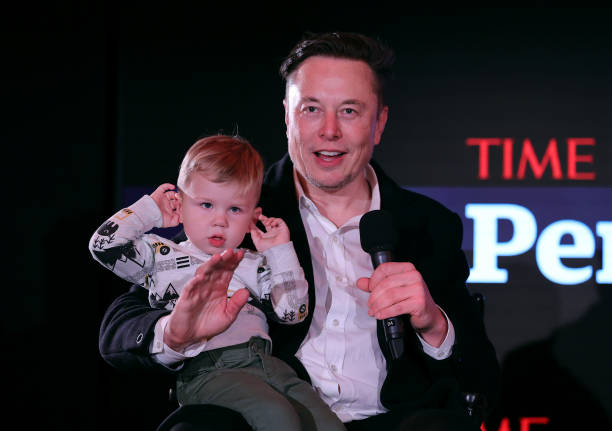

OpenAI: Elon Musk tentou assumir o controle
OpenAI rebate processo de Elon Musk, ao revelar que executivo investiu só US$ 45 milhões na startup, mas tentou controlá-la mesmo assim

No final de fevereiro de 2024, a notícia de que a Apple estava cancelando seu programa de lançamento de carros elétricos surpreendeu a muitos. Mas relatórios internos sugerem que o projeto nunca funcionará e a decisão de proibi-lo parece repentina. É uma ótima ideia.
Segundo o jornalista Mark Gurman, que escreveu a reportagem da Bloomberg sobre a Apple, o desenvolvimento do carro gerou desafios técnicos e comerciais que foram discutidos na última década..Segundo o jornalista Mark Gurman, que escreveu a reportagem da Bloomberg sobre a Apple, o desenvolvimento do carro gerou desafios técnicos e comerciais que foram discutidos na última década.
Além disso, o valor gasto por peça é superior aos padrões da Apple. Segundo o relatório, a empresa gastou anualmente um bilhão de dólares no setor, o que significa que foram investidos quase 10 bilhões de dólares sem retorno.

Cinco protótipos e vários problemas técnicos
Segundo Gurman, um dos modelos de carro mais avançados da Apple é a máquina branca mostrada aos executivos em 2020. Possui portas laterais deslizantes e teto de vidro.
O interior do carro conta com painéis do tamanho de uma TV, um potente sistema de som e janelas que ajustam o nível de opacidade com base na luz ambiente.
O carro também terá autonomia nível 5, o nível de piloto automático mais avançado do setor e um sonho tornado realidade para as montadoras. Porém, muitos problemas foram encontrados nesse modelo, sendo que o nível mais alto é o nível 3, que ainda requer força motriz.
Ao todo, o carro da Apple teve pelo menos cinco grandes designs. No último deles, o modelo não era mais sequer autônomo, mas apenas elétrico.
Apple pensou até em comprar a Tesla
Outro problema foi a tripulação. Funcionários como engenheiros e especialistas em automóveis ou sistemas autônomos foram contratados e demitidos repetidas vezes, roubando e perdendo talentos para outras montadoras.
No processo, a Apple cogitou parcerias, negociações ou mesmo aquisições para tentar pular etapas e agilizar processos.
A Apple considerou comprar a Tesla em fase preliminar por cerca de US$ 30 bilhões – vinte vezes seu valor de mercado atual – mas Tim Cook encerrou todas as negociações após discussões iniciais.